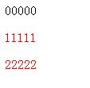
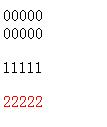
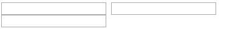
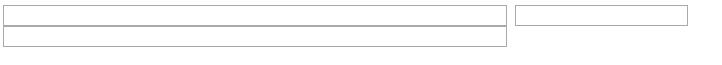

Today, I met a very embarrassed thing, when I did a small demo to help a junior sister apprentice test the assignment, I didn't use "id" and "class" because I just wanted to make it simple, so I used "nth-child" and "nth-of-type" instead. However, something didn't work, how can it be? I thought I knew how to use them, anyway, I was wrong. Now, I just want to write a blog to really discuss the difference between "nth-child" and "nth-of-type".
1. Official introduction
(1) "nth-child"
The :nth-child(an+b) CSS pseudo-class matches an element that has an+b-1 siblings before it, where n is positive or zero. More simply stated, the selector matches elements whose numeric position in a series of siblings matches the pattern an+b.
(Click here to see more details)
(2) "nth-of-type"
The :nth-of-type(an+b) CSS pseudo-class matches an element that has an+b-1 siblings of the same type before it, where n is positive or zero.
(Click here to see more details)
2. Difference
We will know from the official introduction that the difference is "nth-of-type" must match same type. For example, when we write the following code:
p:nth-child(2) { color: red; }
p:nth-of-type(2) { color: red; }
<body>
<div>00000</div>
<p>11111</p> // red
<p>22222</p> // red
</body>
What's happening? The first and second "p" elements both turn to red color, and we should know that the "p:nth-child(2)" controls the first "p" and "p:nth-of-type(2)" controls the second one.

Do you think it's easy? Oh, let's see this example:
p:nth-child(2) { color: red; }
p:nth-of-type(2) { color: red; }
<body>
<div>00000</div>
<div>00000</div>
<p>11111</p> // not red
<p>22222</p> // red
</body>
Ok, even though it has set "p:nth-child(2)", the second element is "div", not "p", so the "nth-child" doesn't work. And we can see from the result that the "nth-of-type" controls the second "p" all the time, and it work very well.

From this example we will know: when we want to select an element which has certain order of its parent, we prefer using "nth-child", and if we want the element has certain order of the same label, the "nth-of-type" maybe perform better.
However, I just want to remind you that the "nth-child" and "nth-of-type" don't control only one element, it means when you have two "p" as the second child of different parents, the "nth-child" and "nth-of-type" will control both of them. Let's see an example of controling "input". I just want to set the third input's width to be "500px". Because in this example, the "nth-child" and "nth-of-type" have the same function, so I just use one to show the example.
input:nth-child(3) { width:500px; } // Wrong!
<body>
<div>
<input type="text">
<input type="text">
<div>
<input type="text">
</body>
Do you think it will work? No! Should we use "nth-child(3)" because it's the third input of the document? No! Let's see the result:

All of three "input"s have the same width, so our CSS doesn't work well. Why? Because we should know, the third "input" has only one parent: "body". So it's not "nth-child(3)", it's "nth-child(1)". So let's see this code:
input:nth-child(1) { width:500px; }
What will happen? We just change the number "3" to number "1". Let's see the result:

We can see not only the third "input" changed width, but also the first "input". Why? Don't forget the first "input" is also the first child of its parent —— "div". From this example, we will know that the "nth-child" and "nth-of-type" will control all of elements if they match the condition.
Ok, if we just want to select only the third "input", can we do that? No, only use "nth-child" and "nth-of-type" cannot work in this example at least. We have to add "class", "id" or other label to help us.
Finally, there are some other CSS pseudo-class whose function like "nth-child" and "nth-of-type":
:last-child
:first-child
:only-child
:last-of-type
:first-of-type
:only-of-type
(That's all)